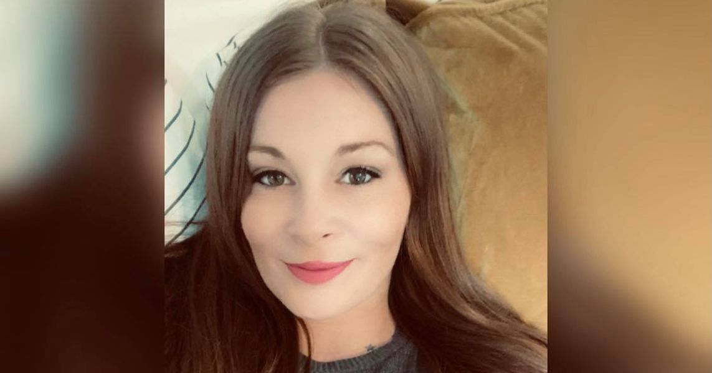

Timeline photos
Suzanne Thomas was found dead in a scrapyard in Canton April 26 2023.
I've been meaning to talk about this for some time. But it's a bit of a difficult subject for me.
Suzanne was a close friend of our homeless community. She lived at our tent village for quite some time.
She also was wanted for the murder of her boyfriend, Joe Hall. He was shot in his home in December 2022.
The murder of Joe was particularly difficult for us because Joe was so well liked in the community. He was incredibly kind and a really great worker. He owned his own roofing company at one time in his life.
Apparently Suzanne and Joe were arguing over a car. And then another person, Darrell Lee Antwan, apparently shot Joe.
We all had some heart-to-heart conversations over this murder of Joe.
We were deeply concerned that someone would go after Suzanne for that murder.
So, the fact that Suzanne was eventually murdered is not a huge surprise. I don't know if she was killed in retaliation for Joe or not. But I've never heard of anyone ending up dead in a scrapyard.
I always was really bothered by the picture they use for Suzanne in the newspaper. She was WAY more beautiful than that picture. The picture I posted here is much closer to how she normally looked.
It's funny that kind of thing gets under your skin. Who cares what she looks like? But for some reason I care. Looks matter with humans. Looks shape the story.
Suzanne was beautiful.
She was kind and sweet and really enjoyable to be around.
When Joe and Suzanne were happy together... they were really happy. When they were not happy together... they were REALLY not happy.
Suzanne would get in these bad situations. She'd stay with some guys who would dose her with drugs that weren't what she intended to take. She nearly died because of those situations a couple times. Joe saved her from those situations more than once.
The last time I saw them, they were together. They came up to my truck in our yard. They were happy and smiling. Fortunately, that's the image I have in my head of them. It was a sunny day. The weather was nice. They both looked beautiful. That's the image I think of when I think of Suzanne and Joe.
I guess Suzanne's murder closes the book on the Joe and Suzanne love affair. It's how you might end the story if you were writing it... if you were writing a tragedy.
This story asks all the big questions. What's the point of all this? Why does the world hand us the cards we are dealt? What kind of redemption can we find in this story?
And, of course, as the hopeful humans that we are, we insist on adding a happy ending to the story: "They are at peace now." "They are with God now."
Maybe. Maybe not. That Heaven narrative feels a little contrived to me. It's just a little too convenient a storyline. And that makes me feel like an afterlife mythology is probably just a way to make us feel better. Because if the truth is that "life sucks and then we die" that's a tough pill to swallow.
Does any of it matter? What happens to us when we die? What happens to us while we're alive? Who really cares?
Joe and Suzanne are murdered and dead. Just like the other 8 billion of us on the planet right now who will eventually be murdered (by something) and then will be dead. Who cares? In fact, how can you possibly care about 800 people much less 8 billion people?
And yet somehow we do care. We have hope when all signs point to hopelessness. That's the most bizarre part of it all.
There's just a lot here to unpack for me and many of us who were close to Joe and Suzanne.
Take care everyone. Try to be nice to each other as much as you are able. It might be all that we actually have.